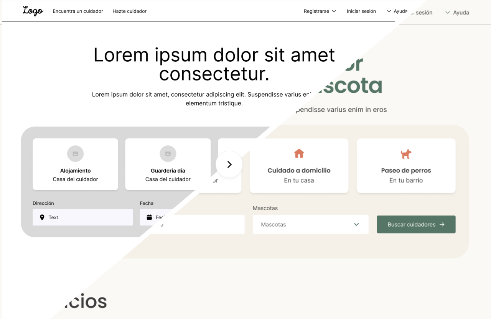
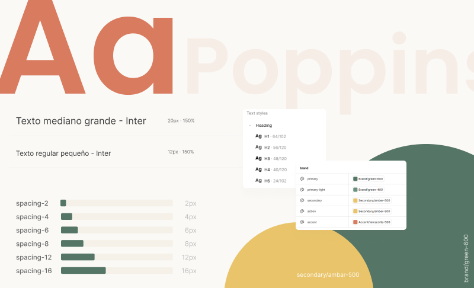
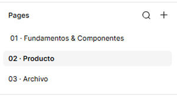
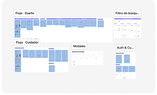
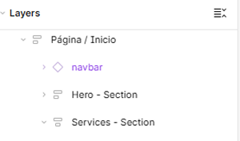
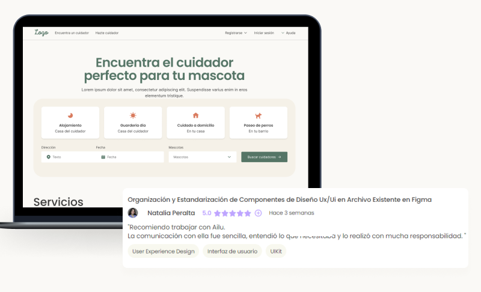

1. De una estructura funcional a una interfaz consistente
El proyecto ya contaba con wireframes y flujos funcionales definidos. El desafío estaba en llevar esa estructura a alta fidelidad y construir un lenguaje visual capaz de sostener las distintas partes de la plataforma.
El foco no estuvo en redefinir el producto, sino en trabajar sobre la estructura existente para darle coherencia visual, jerarquía y consistencia.

2. ¿Cómo construir una identidad visual consistente sobre una experiencia que ya estaba definida a nivel funcional?
Crear una dirección visual
Traducir la propuesta de ClubPethouse a una interfaz cálida y confiable sin perder claridad.
Sistematizar las decisiones
Evitar resolver cada pantalla de forma aislada y construir patrones reutilizables.
Preparar el archivo para continuar creciendo
Organizar components, foundations y layers para facilitar futuras iteraciones.
3. Construyendo el lenguaje visual
La dirección visual buscó equilibrar dos necesidades del producto: transmitir cercanía en un servicio atravesado por el cuidado de mascotas y, al mismo tiempo, generar suficiente claridad y confianza para acciones como buscar, comparar y reservar cuidadores.
A partir de esa dirección construí las foundations del sistema: color, tipografía y una escala de espaciado común para las distintas interfaces.

4. Del estilo al sistema
Una vez definida la dirección visual, el siguiente paso fue transformar esas decisiones en un sistema consistente y reutilizable. Colores, tipografías, espaciados y estilos dejaron de resolverse pantalla por pantalla para convertirse en foundations y componentes capaces de mantener la coherencia a medida que el producto creciera.

5. Preparando el archivo para crecer
A medida que el sistema crecía, también era necesario reorganizar el archivo de trabajo. La estructura original mezclaba pantallas y componentes, sin una nomenclatura consistente, haciendo difícil reconstruir los flujos y encontrar elementos.
Una estructura clara para el archivo
Separé el contenido en páginas según su función: sistema de diseño, producto y material descartado. Así, cada elemento tiene un lugar definido y es más fácil navegar el archivo.


Flujos fáciles de recorrer
Organicé las pantallas en secciones según su funcionalidad y agrupé los distintos recorridos del producto. Esto permite entender rápidamente cómo se conectan las pantallas y localizar cada flujo.
Una nomenclatura consistente
Renombré las capas siguiendo un sistema común y una jerarquía lógica. La estructura de cada pantalla queda así más clara y resulta más fácil encontrar, editar y reutilizar elementos.

6. Resultado
El proyecto se entregó con una interfaz consistente, un sistema de diseño documentado y un archivo reorganizado para facilitar su continuidad. El resultado fue una base más clara y reutilizable sobre la que seguir desarrollando el producto.

7. Aprendizajes
Diseñar sobre un producto existente
Trabajar sobre una solución ya definida implicó entender decisiones previas antes de proponer nuevas. Aprendí a intervenir sobre un producto existente sin empezar de cero, identificando qué conservar, qué sistematizar y dónde aportar mejoras.
Diseñar pensando en el handoff
El proyecto me permitió profundizar en prácticas de handoff y entender el archivo de diseño también como un entregable. La organización, documentación y nomenclatura fueron parte de preparar una base que pudiera ser comprendida y continuada por otras personas.
IA como soporte del proceso
Exploré el uso de IA como herramienta de apoyo para tareas de documentación, nomenclatura, análisis y evaluación. Aprendí a incorporarla como soporte del proceso, manteniendo las decisiones de diseño y la revisión final bajo mi criterio.